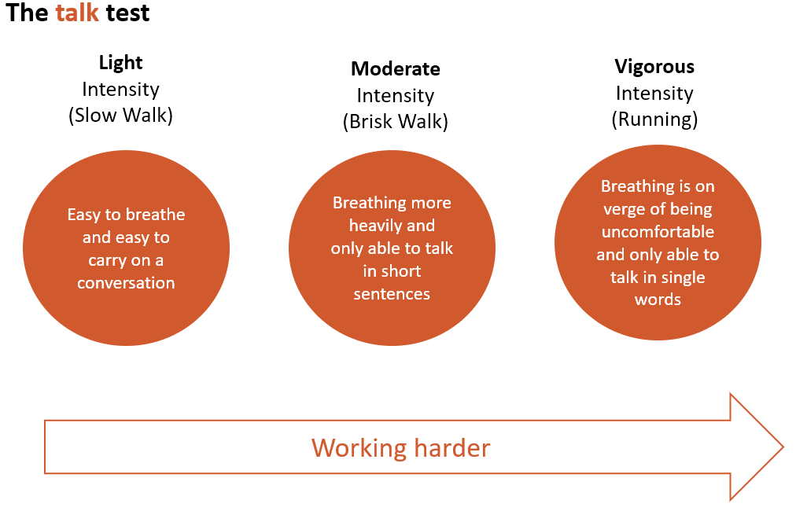

Cardiovascular exercises are anything that gets the heart pumping faster and makes you breathe faster. Examples of cardiovascular exercises include walking cycling and climbing stairs.
We know a lot about the benefits of cardiovascular exercise. It is associated with many short-term improvements including improved mood, better sleep, and reduced chronic pain. In the longer term, regular cardiovascular activity is associated with profound positive effects on the body including lowering blood pressure and improving heart health, weight reduction and improved immune function.
Whatever your cardiovascular exercise, knowing how to get the right level of effort (intensity) and duration (minutes) is really important. The harder you exercise the more energy is required. You have to choose cardiovascular activities which work well for you and the good news is that working at any intensity above a resting level has been shown to provide health benefits. You can measure how hard you are working by your breathing rate.
Experts have developed scales to help us measure the level of effort we are making (also known as exertion level). The Talk Test is a simple scale which allows you to rate your physical activity intensity using three simple categories- light, moderate and vigorous.
